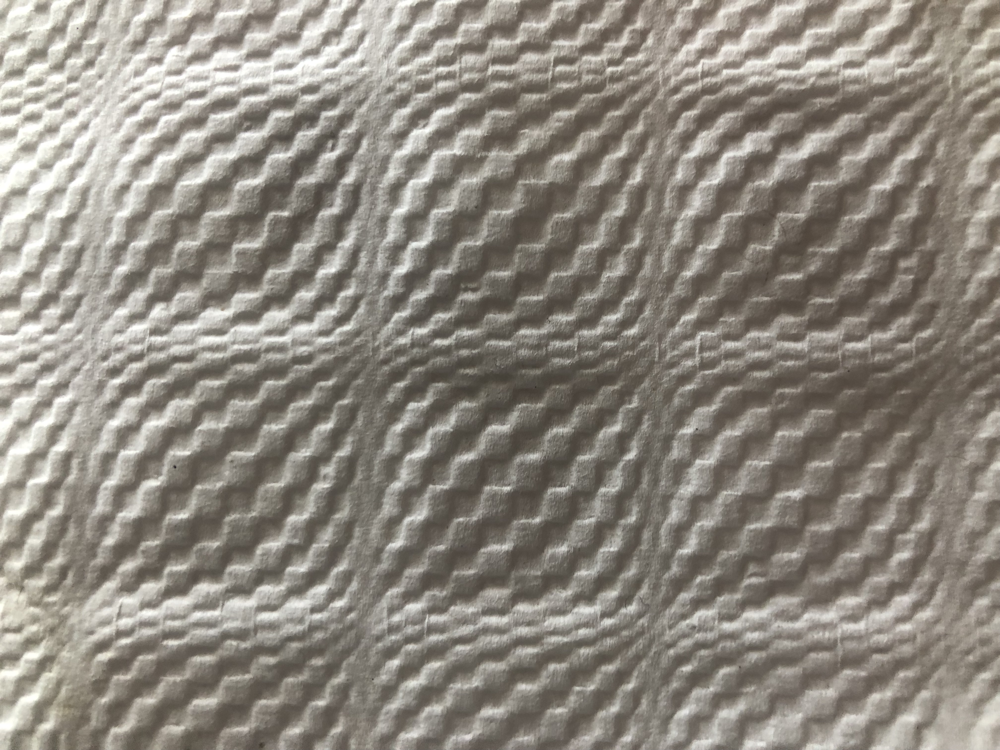
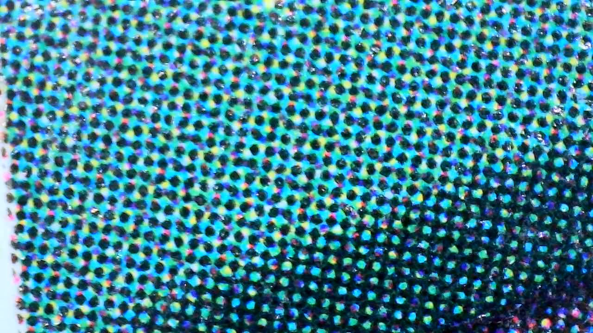

Creative Coding: Visual Experiments & Information Pipeline
an ongoing coding and research seminar
How can we generate patterns?
NB: both examples below will be discussed during our conversation to introduce the next set of tasks
- please collect interesting patterns examples around you
- analyse the basic elements,
- summarise the repetitive process used to create the pattern (translation, rotation, scaling); ie: describe with words what's visually happening. Write these actions down.
- code: introduction to loops and positioning elements (x,y axis in bitmap vs vector)
- We will use code to reproduce the collected patterns (loops and mathematical transformations)
Two examples
Offset printing detail; seen digital through microscope. Offset works by combining colours via 4 coloured layer which are mixed using "gradient" in the pattern (elements are further spaced out)
/IMG_1273.JPG
Checked squares pattern with logarithmic/exponential scaling embossed on paper.
/IMG_1468.jpeg

Repository for this website (assemble, build, deploy): https://github.com/jrgd/creative_coding_website
Main website: CreativeCoding.xyz
Author: Jerome Rigaud